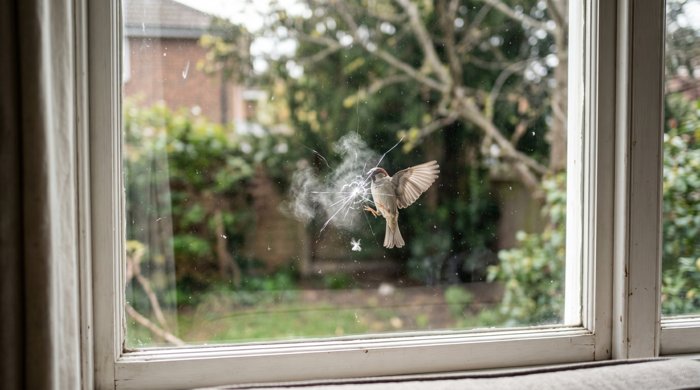

About Bird Collision
우리가 몰랐던 유리창의 위험
800만
연간 국내 충돌 추정 개체 수
80%
스티커 적용 시 충돌 감소율
1위
인공 구조물 충돌 사망 원인

조류 충돌(Bird-Window Collision)이란?
새들이 유리창이나 투명 구조물을 인식하지 못하고 충돌하는 현상입니다. 국내에서는 2019년 국립생태원 조사를 통해 처음으로 실태가 대두되었으며, 이후 환경부·지자체 차원의 정책 대응이 시작되었습니다.
단순한 자연사처럼 보이지만 도심 속 건물 유리는 자연적으로 존재하지 않는 인공물입니다. 즉, 인간이 만들어낸 인공적 구조물이 야기하는 간접적인 인재입니다.
"인간의 활동으로 인한 야생조류의 사망 원인 중 건물 및 투명창 충돌은 서식지 파괴 다음으로 가장 많은 조류를 죽음으로 내모는 2위 요인입니다."
국내 피해 현황
- 서울 도심 유리 외벽 건물: 연간 건물당 평균 3~8건 충돌
- 투명 방음벽: 전국 약 20,000km, 가장 위험한 구조물 중 하나
- 버스 정류장: 새롭게 늘어나는 충돌 장소
- 봄·가을 철새 이동철(4~5월, 9~10월) 피해 집중
주요 피해 조류
| 종 | 특징 |
|---|---|
| 박새 | 도심 가장 흔한 충돌종 |
| 딱새 | 저층 유리 주요 피해 |
| 직박구리 | 반사 혼동 잦음 |
| 황조롱이 | 맹금류, 고층 피해 |
| 제비 | 이동철 집중 피해 |
BIRD GUARD는 실제 현장 조사 데이터를 기반으로 AI 스티커 추천 시스템을 개발해 건물별 최적 충돌 방지 솔루션을 제공합니다.